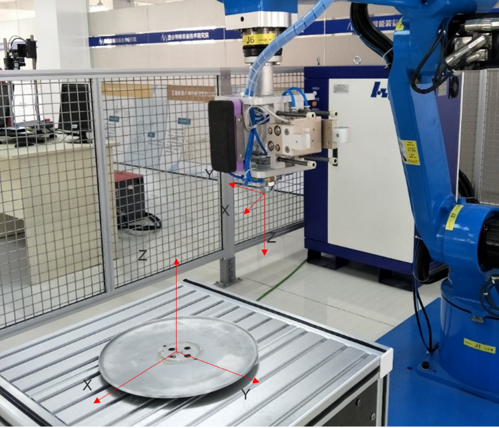
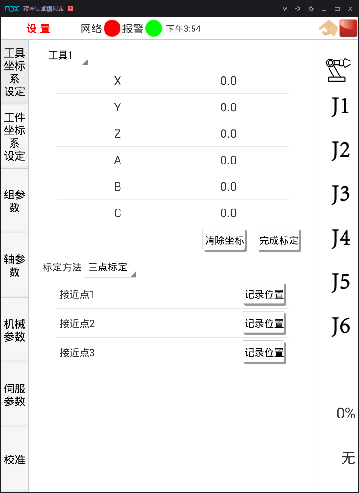

4.1喷漆前的准备
4.1.4喷枪工具坐标系三点标定

图4-5 喷漆工具坐标系
本项目使用喷漆工具的TCP点设定在喷枪底部端点位置，相对与默认工具0的坐标方向不变， TCP位置发生改变。所以，采用三点法标定工具坐标系。

图4-6 工具坐标系标定界面
点击工具坐标设定进入到工具坐标系设定界面， 选中需要标定的工具号（工具0不能被标定）， 点击“坐标标定”，选择三点标定，可弹出坐标标定对话框，如图4-7所示。通过标定空间中机器人末端在坐标系中的三个不同位置来计算工具坐标系。工具坐标系三点法标定操作步骤如下：
1）首先在机器人工作范围内找到一个非常精确的固定点作为参考点。
2）然后在工具上确定一个参考点（最好是工具的中心点）。
3）用之前介绍的手动操纵机器人的方法，去移动工具上的参考点，以三种不同的机器人姿态尽可能与固定点刚好碰上。
4）机器人通过这三个位置点数据计算求得TCP的数据，然后TCP的数据就保存在这个程序数据中被程序进行调用。